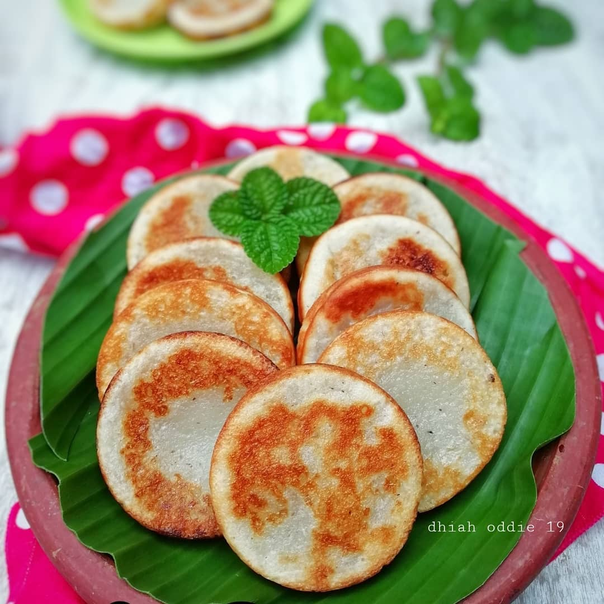

RecTia
Welcome to
RecTia
Resep Membuat
Wingko
Resep bukan hanya untuk dibaca. Tetapi juga untuk dicoba.
Mari kita coba!

Bahan :
Kelapa 2 buah
Tepung ketan 500 gram
Gula pasir 600 gram
Mentega 50 gram
Air kelapa 300 ml
Telur 1 butir
Vanili bubuk 1/2 sdt
Wijen (opsional) secukupnya
Cara membuat :
Masukkan semua bahan ke dalam ember plastik, kemudian aduk hingga tercampur rata.
Siapkan lembaran seng dan letakkan di atas kompor, kemudian panaskan teflon yang dapat mencetak 7 wingko kecil di atas lembaran seng tersebut.
Oleskan mentega pada cetakan setiap akan mencetak adonan.
Cetak adonan kemudian beri taburan wijen. Jangan lupa dibolak-balik dan tunggu hingga kecoklatan.
Angkat wingko dan ulangi hinga adonan habis.
Menurut perkiraan, 1 resep ini dapat menjadi 25 wingko.